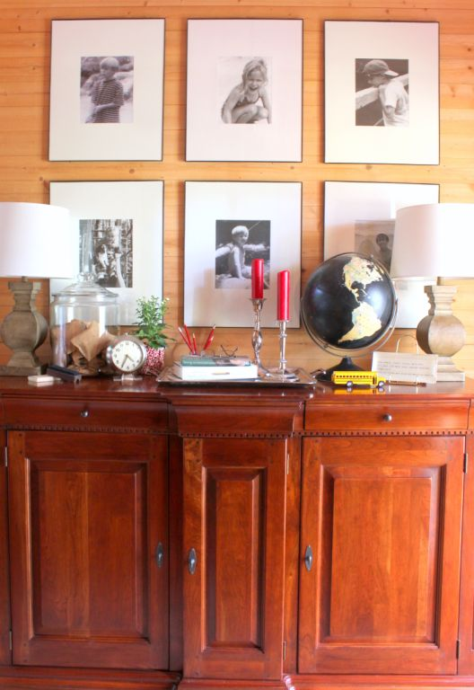

.png)
.PNG)
.PNG)
.PNG)
.PNG)
.PNG)
.JPG)
.JPG)
.PNG)
.PNG)


This makes decorating in September a little confusing. It still seems like summer, but everyone is ready for autumn – especially when you consider the fact that we have been back in school for well over a month now. But pumpkins on the porch? It just feels wrong when the temperatures are in the nineties.
In the past, apples have worked well for September decorating, but this year I decided to use back to school items throughout the house for our early fall decorating. Pumpkins will just have to wait until October. 🙂
 I rounded up a globe, a toy school bus, some books, and chalk for the foyer. The jar holds after school cookies made with M&M’s, and the small Live Simply tray from Paper Source works nicely there as well.
I rounded up a globe, a toy school bus, some books, and chalk for the foyer. The jar holds after school cookies made with M&M’s, and the small Live Simply tray from Paper Source works nicely there as well.
In the family room, the mantel also got a few school related items – including books in a jar, of course. 🙂
There is also a photograph of the school my husband and I attended when we were children. (We did not know each other way back then though.)
There is another globe on the mantel. (This one is smaller than the one on the foyer buffet.)
Even the bathrooms have a touch of a few back to school accessories.
I just couldn’t resist all the toy school buses I found this summer in Kroger. The one in the foyer even has operable doors and stop signs.! (The one here in the children’s bathroom does not.)
The master bathroom has a miniature composition notebook and pencil along with a potted mum.
And finally, the master bedroom has a few books along with more mums and a bowl of apples.
If I can finish getting the kitchen and playroom back in order, I will have a little more decorating for you to see in the next post. (I spent the weekend cleaning. With all the packing in the last 2 weeks, the house looked like a tornado had hit it!) So what do you think of back to school style for September decorating? For me, it seems to be an easy transition from summer to the all out autumn look that will be here before you can say Trick or Treat. 🙂 When do you start decorating for fall?
We’d love to hear!


.PNG)
Like Laura, I wanted to know about the box springs. Thanks for sharing the “how to”. Dust ruffles can be a bother but necessary and often way too expensive for my budget! It has been a long time since I have visited. Why I ask myself…? Fixing that now.
Happy Tuesday! Linda
———————————————————————
They are often expensive, and they are a royal pain to me to sew. This worked out to be a good solution for that space. Thanks for stopping by Linda!
Kelly
I saw your blog on Hooked on Houses. I love how you have decorated every inch of your home for fall… and the buses all over the house. Wonderful school feeling, isn’t it.
Well, back to work – just wanted to leave a quick hello and say thanks for the great photos.
——————————————————————-
Thank you for jumping over from Julia’s site, Christine. I am happy you liked all the back to school things here. Glad you could take a break from your work to visit. Hope you will stop in again!
Kelly
I love this! Found your blog over at Hooked on Houses. I simplified decades ago starting with apples in Sept because they felt “back to school” to me & south FL is like GA heat. Then I add pumpkins, gourds, colored leaves & gilded fruits in Oct. Nov comes and all the fruit & leaves go into a cornucopia centerpiece. In Dec I put the fruit on our Christmas tree along with the other ornaments. Come Jan the fall stuff goes back to the fall bins for next year. I have early fall and late fall bins. I’m going to have to ask my daughter who recently moved to GA to look for some school buses! She is homeschooling so the other things are already out in view 😉 Her color scheme is just like yours so I am going to have to follow your blog for more inspiration. Thanks so much.
——————————————————————
I’m so glad Julia’s wonderful site led you here Pamela! Sounds like you have a great decorating plan for each season. I love it!
Kelly
I just found your blog (I headed here from Hooked on Houses) & am wondering how I could have possibly missed it???!!! I love the back to school decorations — they are so fun and fit in with your normal decor so nicely so that they don’t look like a store display. The books in the large glass jar — I think that I’m going to have to steal that idea!
http://www.vintagepretties.typepad.com
——————————————————————-
I will have to thank Julia for sending you my way, Kim! Back to school displays are easy because I have so much of these items in our closets here. You go right ahead and steal the books in the jar idea. I am glad you found something you could use here!
Thanks for stopping by!
Kelly
[…] 6. “September Decorating” […]
Hi Kelly
I finally had time today to read thru this post and the Sept 2012 post as well. It’s been my delight to enjoy this with my morning tea and not because I have the day off but today’s work is afternoon and into the evening. So many thoughts that I want to share but I’ll resist and tell just a few…Sacramento is Hot still…feels like summer so not much fall decor in house…have sunflower wreath on front door, from my yard veggies and flowers about interior (not veggies mixed with flowers)…will bring in mums and pumpkins in Oct with gourds and Indian corn in Nov…great idea and am enjoying the “back to school” theme as it is not temp dependent…I’m definitely a category 2 table decorator as I seem to go to “less is more” approach…your thoughts about the 3 categories were interesting and you reminded me of a dear friend that I have not heard from for such a long time (her mind works like yours and I luv it)…until next time…BTW will you be a “3” or “2” table person in this new season for your family?
——————————————————————-
I am a “2” person because of a bad reason. Our office is a disaster right now. My husband I both say we should just blow it up and start new! The carpet HAS to go, and all the things in there that need organizing won’t fit in there. So our dining room and living room tables have become our workspaces. His office abpve the garage needs a desk and/or table before he can do any work in there. (Our son took his desk from there when he moved.) So unfortunately our computer work takes over areas that they are not supposed to be in.
Kelly
That is so funny. As you know I live in a climate where september and october are still summer. To be honest I usually don’t think about fall until it is over…which is about Xmas!!
———————————————————————
And I thought OUR area was bad! ha. You have us beat. I don’t think fall really starts around here until November (and we have been known to enjoy our Thanksgiving dinner out on the porch.)
Kelly
I am loving all the back to school decorations! Those school buses are so darn cute–thank you for providing the link in one of the comments for a similar one.
I hope your sons have made it to their destination as the weather is turning cold around here in western Nebraska. There is even talk of possible snow (!?!) on Thursday. Crazy! No wonder the kids were wild at school today–full moon, snow in September, jr. high hormones! I think I need to retire… 🙂 I hope your school year is going well!
———————————————————————-
They have made it there, and the older one will be flying to Idaho for a couple of weeks with work. They did have to change some of their travel plans along the way. They were supposed to go to Glacier National Park but the roads were closed due to snow. I know what you mean about needing to retire. I have been seriously checking into a December retirement for me. It would be such a nice Christmas gift! LOL
Good luck with your year!
Kelly
So cute Kelly! I love all the little school touches….perfect for your house, I’d say! I’ve been poking around my house too, moving items around and pulling out some different things. Don’t want to hurry Fall, but I was just ready for a change. Pumpkins and leaves will have to wait until October though.
——————————————————————
Thank you so much Jill! It’s fun to shop the house isn’t it! (And works very well with our budget too.) Pumpkins are waiting until October here too.
Kelly
I so love seeing your beautiful vignettes for the seasons….each one definitely says “September”…love how you incorporated the cute school buses and the composition books!…beautiful job as always!..
——————————————————————–
And thank you for your always thoughtful comments Shirley! Glad you liked the September decor.
Kelly
I love those little buses too! Katrina, you wore white pants after Labor Day! Well, I feel like I missed summer so I might just wear white too….but not to the wedding. LOL! I don’t think I am going to decorate anything until Christmas. Oh, but I did decorate wedding cookies most of the day today. Thank you, Dear Cynthia!
——————————————————————-
Bless your heart decorating cookies all day! I bet they are beautiful. Best wishes for all things wedding this weekend. I know it will be perfect because you all have put your heart (and talents!) into it.
Kelly
p.s. I totally understand the not decorating anything until Christmas! You deserve a break. 🙂
Do you happen to remember where you found the silver tray featured on your foyer table with back to school items and candles on it?
———————————————————————
I do remember Nancy, but I am afraid it is not going to help you. My mother (the yard sale Queen) found it at a yard sale, and knowing my love of silver, passed it on to me. It is monogrammed with a large B (which is not my initial) but I have no problem using it with that on it. 🙂
Kelly
Was in an airport when I spied your posting– just loved everything! You are so right about the weather being too hot to start fall decorating– so the back to school/apples is just right! Back from my trip from my o’ Ky home– just 72 hours there but what a glorious time seeing my classmates and touring the old school plus driving around looking at my hometown and taking pictures. May have been my last trip home– so visited the resting places of my family and took roses. Now home, bathroom remodeling finished ( but not cleaned or decorated) and packing for a week at the beach!! Have a new novel,sand chairs and umbrella and missing the ocean air! Wish you and all the readers could come along, too!:)
——————————————————————–
Don’t say that is your last trip. You may go home yet again, Louvina. I am glad your trip was a good one. You have certainly been the big traveler lately!! Hooray for finished bathroom remodel! Jealous of your week at the beach, and I do wish you could take all of us along with you. Eat some shrimp for me since I can have none. 🙂
Kelly
Hi Kelly, as an art teacher for 40 years I love to decorate with vintage art supplies and tools. Old staplers, chalk boxes, paintbrushes, and picture books are sprinkled around my eat in kitchen. Btw on one of your post you showed the doors of different teacher rooms and they had cut out scissor silhouettes. Where did they come from?
———————————————————————-
40 years…oh my! I will not make it in this field that long, I know. I love that you decorate with vintage art supplies. That is perfect! The scissors were all made from a pattern that I just drew on cardstock and cut out. It got passed around to everyone.
Kelly
Kelly,
I couldn’t agree more…September is hot here in Missouri too. I love the back to school theme. I do enjoy pumpkins and Fall decorations too but what you have done seems more fitting until October arrives. Thanks for sharing. I can’t wait to see the play room!
———————————————————————-
It seems to be hot everywhere! Thank you for your always encouraging comments Dawn. You are so sweet. I have the kitchen ready but hope to get the playroom cleaned up tonight. Then I will get the post out just for you.:)
Kelly
Hi Kelly!! I think your September decor is so cute and a great idea!! I am in southeast Virginia and it is still hot here too. My solution ,because I am so ready for some fall color, is to put things out slowly. This past weekend I put my fall wreath on the door but will wait until October to decorate with pumpkins and mums. I have also put some touches on the screened porch but not everything yet. I don’t do much Halloween decor so most of my fall things are out there until Thanksgiving….it is nice to slowly change to the colors of fall instead of doing it all at once……but I also like your back to school theme. You really should retire from teaching already and go into your other God given talent…..decorating!!! : )
——————————————————————–
I like the idea of doing it slowly. That seems quite logical. 🙂 Retire…definitely been on my mind, and I am seriously checking into it. Of course, having the air conditioner go out certainly didn’t help with looking at it financially (along with being in the same month as college tuition being due! 🙁 )
Kelly
Off the current subject……I noticed an interesting detail on your bed….the box spring has a cute blue and white check cover instead of a dust-ruffle. can you share your instructions for this technique please. I think I could probably figure it out but if you’ve already done it you may have some tips to share that might make it easier! Thank you.
Laura
———————————————————————
This is going to be a strange one to explain…It is simple long pieces of fabric hemmed on all sides. It is wrapped around the box springs and stapled on the top of it using a staple gun to hold it in place. It does not tuck under it, just simply comes to the bottom of the box springs- straight along the edge. I hope this makes sense! Sort of like piecing wrapping paper on a package. 🙂 When I show you the update boys’ room next month, you will see I did the very same thing in there with drapery panels.
Kelly
Gorgeous, every picture is stunning.
———————————————————————-
Thank you Marty!
Kelly
I really like your school theme early fall decorating! Normally I begin Autumn decorating in early September including pulling out fall dishes I use until Christmas. With our remodeling projects and chaos, I don’t think I’ll be able to do much. It has been summer like (and gorgeous) here. I still have summer annuals on the porch and deck but fall containers ready to display. Spotted an earlier comment that your sons will live in Bellevue – I grew up in Renton just south of there! My mom still lives in our family home.
———————————————————————
How nice to have fall dishes to use for the season. My husband and I looked at Spode Woodland yesterday, and I commented that I would like to collect it one day to use in the fall (in another house.LOL) Yes, I saw Renton on the map when we were looking for housing in the area for them. It’s not far at all. They are in an apartment right in downtown Bellevue. (I tried to get them to take an apartment in Kirkland that was right above the Sur La Table shop, but they didn’t listen to my wishes….thought it might encourage them to take cooking classes!)
Kelly
I love your decorating and using school items was a smart idea. I just put out my Fall wreaths and like you, it still feels like summer here in Georgia. I need to see some colored leaves and cooler weather. I loved the Fall when we lived up north and really miss it since it is my very favorite season.
——————————————————————-
Thank you Cheri! It does feel like summer and will for awhile. I know your fall up north would be more in season than our late late fall here in the South. I would miss that too.
Kelly
I was so thinking of you and your family Thursday. The emotion and excitement of the boys embarking on their trek west. Exciting then to melancholy, I am sure. I should have been cleaning a bit too, of the yard and garden kind, but the weather was gorgeous here finally. It was a weekend of outings. A lake front outing on Friday, gardens, kites and a walk on Saturday. Oh and Sunday brought just “at home” lazing and a quick trip with daughter to shop for some Target needs. 🙂 No pumpkins here either yet, Kelly. I will wait until October too. Our weather here is wonderful, with less humidity, cooler temps and cool nights for sleeping. The weather at least is feeling like fall. I just love your globes and little school buses. Here’s hoping you and your husband this week find some quiet and calm.
———————————————————————
Thank you for thinking of us. It has been a change for sure – but one that has been a long time coming. It sounds like your weekend was such a fun one! Love it! We are supposed to be getting a change in our weather very soon I have heard. I am looking forward to it! (Although it probably won’t last very long.)
Kelly
It’s so fun to see your back to school decorating Kelly. I agree with you about the pumpkins ~ as we are near 100 here in TX too. I put out my Target globe, some vintage school books and crayons and markers in JARS! I’m all set for a few weeks. I am looking forward to seeing the rest of your decor ~ love your style!
——————————————————————-
100 degrees in Texas! Whoa that is warm. Yay for your markers in jars, Sue! Your back to school decor sounds lovely.
Kelly
Kelly: Give us some details on all your framed black and white photos. Please!
Size of frame?
size of mats? How do you select pic, mat, frame size?
Is there a formula for this?
Can I take a color photo and g black and white photo and get black and white?
Would a STAPLES store do this?
So enjoy your blog and photos.
Teacher, teacher, give me a lesson here!
——————————————————————–
The frame sizes vary…if it is a big space on the wall, I want a big frame. If it is table space, I like to use a variety of sizes. I don’t think there is a formula. I will be doing a series in October with more helpful ideas for using photographs, so please check back then. Yes, you can take a color photo and have it turned into black and white. Our local pharmacy has that option on their printing machine, but I do that here with all the ones we print here at the house. I don’t know for sure with Staples, but I bet they could do it.
Kelly
I LOVE these buses!!!! I may just have to order a few!
Can you believe that just this weekend I put away all flags and flag inspired decorations. When my husband hoisted the rubber maid tote into the attic he asked me if I wanted him to bring down the fall/halloween tote. Like you, I am just NOT feeling the fall thing yet so I said no. My only nod to fall so far are 3 white gourds on the chest in the hallway.
I even upset the fashion police and wore white pants to a wedding this weekend.
Hope it cools down your way! Kathy has her wedding of the century (well, really her daughter’s)this coming weekend and the weather forecast is perfect…75 degrees and only 10% chance of rain!!!
———————————————————————
So glad you liked it Katrina! Yes, I can believe the flags and all are just now being put away. Life has a way of getting in the way of decorating, doesn’t it?LOL I hear congratulations are in order for your new grandchild! How fun that he arrived on the same day as Kathy’s daughter’s wedding. Don’t spoil him too much! 🙂 (Saw a super cute photo of Emery and Tripp together!)
Kelly
I think what you have done to decorate is very cute and sweet! My solution is to use sunflowers! I wait until it is actually fall to pull out the rest of my bag of tricks…but I like the Indian summer…and when the cold snap does come then I will pull out my pumpkins and scare crows…I try not to push it or be too influenced by it anymore! I am retired now and therefore have retired and simplified my seasonal and holiday decor a lot! Simple bowl of harvested veggies and some leaves works for me! displaying my canning! HA!
———————————————————————-
Sunflowers are a great idea for September! (and it doesn’t take a lot of them to make a big statement.) I like the idea of the harvested veggies too.
Thanks for sharing!
Kelly
Kelly,
We’re in the same weather boat out west. It’s been very hot and humid and while my heart longs for turtlenecks, warm cocoa and a fire in the fireplace, the weather insists on shorts and flip flops! Your back to school theme is just right. A look towards the season we all love, and a fresh line leader to guide us.
xo,
Karen
———————————————————————
I loved all the cozy things you named here about fall, and I am ready to trade in those shorts and flip flops for sweaters and jackets (but I don’t want the extreme cold though.) I am so glad you liked the school themed items. Your favorite season is just around the bend! 🙂
Kelly
Well I have put out some pumpkins Kelly but I have greatly culled my collection so it is not unbearably cute.:) We are hoping for a cold front to come our way this week so maybe it will feel like fall soon. I really like all those yellow school buses. They do add a pop of color to your house!
———————————————————————
A cold front would most definitely be a welcome change here. Glad you liked the buses! Yellow can brighten up even the most dark of spaces. I bet you saved the best of your pumpkins so I have no doubt that they are cute! 🙂
Kelly
Hi Kelly, I start decorating for fall around September 21st when it becomes “officially” autumn. Love the touches you’ve added!
——————————————————————–
Perhaps by the official date, at least the mornings will have more of a fall feel to them. Glad you liked the decorating Anne!
Kelly
Goodness, yes, those little busses and globes are too cute not to display. I’ve gone the apples route, too, as it’s still in the ninety degree range here. I mixed in some farm-themed books and things, too- kind of a pre-harvest look, I suppose.
Your vignettes are always so cheery, I’m sure they lend a good start to your day. Looking forward to seeing the other rooms!
———————————————————————-
A harvest theme is a great idea for September, Vicki! (If it involves food, count me in. LOL) Thank you for the kind compliments. Hope to get the other rooms in order for you to see soon.
Have a happy Monday!
Kelly
Kelly, It’s refreshing to see that someone has the same idea about making the smooth, instead of abrupt transition, into the next season. Even though fall is my absolute favorite season of the year, I can’t bear to move into it when the temps are high and everything is so green outside. Your rooms are lovely, and as usual your creativity is classy. Everything blends so well into your decor. And, may I say it? Oh, I have to say it..I am coveting the yellow school buses and the globes. Just LOVE them. This post was a treat! Thanks so much. Have a great SCHOOL week. I’ll sit quietly at my desk and wait patiently to see the kitchen. (Well, maybe not too patiently.)
Sherry
——————————————————————–
Hi Sherry! I think if we put pumpkins out on the porch now, we would have baked pumpkins. 🙂 Thank you for the compliments on the decorating. (It is very easy to pull off back to school when you have been a teacher forever.) One of those globes came from Target, but the other one was old, in bad shape, and I just painted black over the oceans. (It was probably worth millions on Ebay as a vintage globe before I painted it, right?) The buses were too good to pass up on the toy rack at the grocery store. There is a similar one at Amazon here: http://www.amazon.com/Toysmith-Large-School-Bus-7/dp/B0040HRVN8/ref=sr_1_2?ie=UTF8&qid=1410175609&sr=8-2&keywords=metal+school+bus
Have a great week!
Kelly
Kelly,
I too am a school teacher, in Milwaukee, WI. Our students started last week, though I’ve been working on getting ready for them long before then. Last week it was hotter than it had been all summer long, and so I’m not in fall mode yet. My beautiful summer flowers should last another few weeks 😉 Because I am so inundated with school work, I no longer ‘do’ Halloween, or Halloween decor. Instead, I do fall decor that will last through Thanksgiving Day, and then it’s on to Christmas! I discovered your blog this summer and read/devoured every post (while I was on summer break!) I love your style of decor and look forward to your posts. We’ve vacationed several times at ocean front beach rentals on Cape Hatteras, so I’ve especially enjoyed your beach vacation rental posts! Best of luck to you in the new/current school year, and thanks for the inspiring, transitional back to school decor ideas…keep all of your refreshing ideas coming!
Jean
———————————————————————-
Goodness! Thank you for all your sweet words Jean. 🙂 Yes, school work does have a way of inundating our lives I’m afraid. Best of luck to you in your new school year. I hope it is your best year yet!
Kelly
Kelly,
You’re absolutely right, it’s impossible to get into the fall decorating mood when temperatures here are hovering near the century mark, still! And working at our local Williams-Sonoma store makes it even more difficult when all our pumpkin foods and table décor is already on display. Am so looking forward to the cooler weather, only wish it would come sooner than later. Your school themed decorating was a great substitute. Have a great week, take care, Lindy
——————————————————————-
Ohhhh…the Williams Sonoma pumpkin bread mix…yum! If I worked there with you, I would have a VERY hard time resisting that. I did buy some pumpkin muffins today at Panera, and I was thinking how good they would taste with some hot spiced tea, but it is certainly not the weather for that. Perhaps a cool front will come in and put all of us in the mood for fall very soon. 🙂
Kelly
Kelly, I’m with you! Our temperature was in the 90’s today…even in Seattle! I just can’t get into pumpkins and fall leaves quite yet when it still feels like summer. The mornings are definitely cooler, however. I like to use apples for September also, as I begin to take down all my “summer” accessories like seashells :(. I love your yellow school buses, pencils, and globes! October is a great time for pumpkins and mums for me!
——————————————————————
Seattle in the nineties! Goodness, I am so glad our sons’ apartment in Bellevue will have A/C. They are currently in Jackson, Wyoming where there will be lows in the thirties later this week. 🙂 So glad you liked the buses and school things Gracia. Hope you have a good week!
Kelly